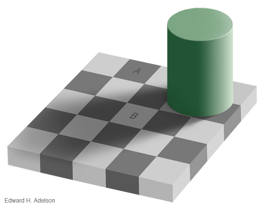

Apie tą pilką glitų drebutį po kaukole
jonas kubilius | café scientifique | 2010 m. balandžio 5 d.
Šioms skaidrėms yra taikoma Creative
Commons Attribution License 3.0 Unported. Paprastai tariant, galite
laisvai naudoti visą čia pateikiamą turinį saviems tikslams, išskyrus
tas vietas, kur nurodytas pirminis autorius (tai daugiausia
paveikslėliai iš straipsnių). Pastariesiems taikomos jų autorių
nurodytos sąlygos; šitose skaidrėse paveikslėliai reprodukuojami
griežtai švietimo tikslais ir neturėtų būti naudojami kitaip. Jei
kartais naudotumėte šių skaidrių turinį, būtų malonu, jei nurodytumėte
mane (Jonas Kubilius | jonaskubilius.mp) kaip šių skaidrių autorių, bet
nebūtina.
This presentation is copyrighted under the Creative Commons Attribution
License 3.0 Unported. You may freely use all of its contents, except
for those parts where the original author is indicated (this is mostly
figures from papers). In this case, the contents are copyrighted under
the license of their authors; in this presentation, contents are
rerpoduced for educational purposes only and should not be used
otherwise. If you end up using this presentation for your purposes, I
kindly ask to indicate the original author (Jonas Kubilius |
jonaskubilius.mp), although you are free to not do so.
Žiūrėkite į centrą apie 30 sek. (kol duosiu ženklą)
Po kurio laiko žvilgtelėjus į kokį nors
daiktą, atrodo, tarsi jis plėstųsi.
Galima įsivaizduoti, kad regos sistema veikia kaip svarstyklės: žiūrint
į statiškus objektus, sukimasis į vieną pusę yra kompensuojamas
sukimosi į kitą pusę ir atrodo, kad niekas nesisuka (kaip ir turėtų
būti). Ilgokai užsižiūrėjus į sukimąsi į vieną pusę, balansas
pasikeičia. Neuronai, paprastai reaguojantys į tos krypties judėjimą,
pavargsta (adaptuojasi), todėl atitraukus akis nuo besisukančios
spiralės, statiški objektai nebeatrodo statiški: sukimasis į vieną pusę
nebėra kompensuojamas sukimosi į priešingą pusę ir atrodo, kad pasaulis
ima suktis į priešingą pusę. Kadangi žiūrėjome į „vidun“ besisukančias
spirales, pasaulis ima „plėstis“.
Ir šitaip aš, tikiuosi, bent iš dalies atsakiau į pirmą
klausimą jūsų galvose: „Kas yra tie smegenų mokslai ir ką ten tiek tirti,
kiek tas smegenis pjaustyti?“ Iš tiesų, smegenų mokslai aprėpia kur kas daugiau
nei vien tik anatomiją. Matot, anatomija yra negyvas daiktas. Ji nekinta.
O juk žmogus, gyvenimas, mokymasis – tai procesas. Kažkas pakinta smegenyse,
neuronai ima jungtis kitaip. Todėl man ir daugeliui kitų įdomu funkcija:
kaip tie neuronai, kurie yra galbūt paprastesni už mano kompiuterį, telefoną
ar net šitą projektorių,– kaip tie neuronai sukrenta į krūvą, ima veikti kartu,
bendradarbiauti, ir iš to randasi žmogus: jaučiatis, mąstantis, gyvenantis,
mylintis. Čia kaip ir gyvenime: vienas žmogus – galbūt paprastas,
nereikšmingas, bet trys milijonai – jau dainuojanti revoliucija. Iš kur?
Štai kas mane domina. Štai ką aš noriu tirti.
Apie smegenų tyrimus yra daug kas kalbėti, todėl pradžiai aš paruošiau šiek
tiek apie tai, kas man atrodo svarbiausia smegenų tyrimuose, labiau
intuityviai nekaip grįsta moksliniais rezultatais – apie galėsime kalbėti
vėliau. Tiesiog noriu, kad maždaug pajustumėte, kas žinoma apie smegenis ir
kur judame.
Smegenų tyrimų tikslas, mano nuomone, yra sukurti modelį, paaiškinantį,
kaip tos smegenys veikia. Praktiškai tai reiškia sukurti dirbtines smegenis.
Kiek tai įmanoma ir ar apskritai įmanoma, nežinia, bet vadovaujamės prielaida,
jog smegenys yra tik mašina. „Aš esu tik kompiuteris. Aš neturiu sielos,“
bent jau taip sakytų mokslininkai. Tokių modelių kūrimas man yra įdomiausia
smegenų tyrimų dalis, bet apie tai dabar nekalbėsime. Pirmiau man svarbiau
parodyti, kiek daug galime pažinti, nagrinėdami smegenis kaip mašiną.
Jei smegenys veikia kaip mašina, aš, žinodamas jos veikimo principus,
galiu jas keisti. Galiu būti pats savo Dievas. Taip pat galiu jomis
manipuliuoti ir tai dabar padarysiu. Keturi pavyzdžiai.
Kodėl smegenų tyrimai?
Ar man vienam taip atrodo, ar iš tikrųjų čia esama kažkokio slapto ryšio?
Checkershadow iliuzija


Ar langeliai A ir B tokios pat spalvos?
Taip, nors akys sako ką kita. Kodėl? Regos sistema kompensuoja šešėlį, kuriame yra langelis B, todėl jis atrodo šviesesnis nei langelis A. Tačiau jokio šešėlio iš tikrųjų nėra, todėl realiai abu kvadratėliai vienodos spalvos (tokio pat intensyvumo). (Yra ir kitų priežasčių, tokių, kaip žinojimas, kad šachmatų lentoje tamsūs ir šviesūs langeliai išdėstyti reguliariai.)
Face aftereffect
Kairėje – buvęs JAV prezidentas George
W. Bush, dešinėje – Masačusetso senatorius, kandidatas į prezidentus John Kerry.
Pirmiausia apie 20 sekundžių žiūrėkite į Bush nuotrauką, kol atsiras nuotrauka centre.
Į ką panašus centrinis veidas? Dabar žiūrėkite 20 sekundžių į Kerry.
Į ką panašus centirnis veidas dabar?
Framing
Įsivaizduokite, kad JAV ruošiasi netikėtam naujos ligos protrūkiui,
kuri, kaip manoma, nusineš 600 gyvybių. Buvo pasiūlytos dvi
alternatyvos, kaip kovoti su liga. Tarkime, kad moksliškai
apskaičiuotos tokios pasiūlytųjų programų pasekmės:
- Laikantis programos A, išgyvens 200 žmonių.
- Laikantis programos B, yra 1/3 tikimybė, kad 600 žmonių
išgyvens
ir 2/3 tikimybė, kad neišgyvens nei vienas.
Kurią iš šių programų pasirinktumėte?
Šitie du variantai duodami pirmai
grupei.
Framing
Įsivaizduokite, kad JAV ruošiasi netikėtam naujos ligos protrūkiui,
kuri, kaip manoma, nusineš 600 gyvybių. Buvo pasiūlytos dvi
alternatyvos, kaip kovoti su liga. Tarkime, kad moksliškai
apskaičiuotos tokios pasiūlytųjų programų pasekmės:
- Laikantis programos C, žus 400 žmonių.
- Laikantis programos D, yra 1/3 tikimybė, kad visi žmonės
išgyvens
ir 2/3 tikimybė, kad žus 600 žmonių.
Kurią iš šių programų pasirinktumėte?
Šitie du variantai duodami antrai grupei.
Pastebėkite, kad abiems grupėms pateikti variantai yra identiški,
skiriasi tik jų formuluotė. Pavyzdžiui, pasak programos A, išgyvens 200
žmonių. Kiek tada žus? 400, arba lygiai tiek, kiek minima programoje C.
Įdomiausia, kad eksperimento dalyviai šito nepastebi. Pirmoji grupė
paprastai renkasi programą A, antroji – programą D.
Turingo testas
Jei
sukurtume dirbtinį intelektą, ar žinotume, kad jis mąsto? Gal atrodo
kvaila, bet: ar mano dulkių siurblys mąsto? O katė? O iš kur jūs
žinote, kad aš mąstau?
Alan
Turing (1950) pasiūlė tokį testą: eksperimentatorius bendrauja su kitu
žmogumi ir kompiuteriu, esančiais kitame kambaryje. Jei
eksperimentatorius nesugeba atskirti, kuris yra žmogus, o kuris –
kompiuteris, vadinasi, šis kompiuteris prilygsta žmogui. Logiška?
Pastebėkite svarbią prielaidą: pasak Turingo, intelekto tiesiogiai
nepamatuosi, todėl mąstymas yra dedukuojamas iš elgsenos.
Ar
gali mašina prilygti žmogui? Gal ne: parodykite man kompiuterį, kuris
aplenktų mane gebėjimais! Tačiau:
- 1997
m.: Deep Blue laimėjo prieš Garį Kasparovą. Ar tai jau dirbtinis
intelektas?
Deep
Blue veikimo pricipas: superkompiuteris, brute force
perrenkantis milijonus ėjimų į priekį. Kasparovas, suprantama, to
negali, tačiau jo privalumas yra mokėjimas atsirinkti ėjimus. Brute
force – tai dar ne
intelektas. Brute force neįdomu.
- prilygti
žmogui, turint tokius pat resursus
- va
tam ir neuromokslai!
Šachmatai
– atleiskite man už nuomonę – vis dėlto nerimtas žaidimas. Sielos čia
nereikia. O ar gali kompiuteris būti toks pat kūrybingas, kaip ir
žmogus? Payvzdžiui, kurti muziką?
- 2009
m.: David Cope sukūrė dirbtinę kompozitorę Emily Howell. Atliksime
Turingo testą:
- 1: Johan Sebastian Bach; 2: Emily Howell (David Cope)
Net
jei kai kurie jūsų užtikrintai žinojote, kuris iš šių dviejų kūrinių
yra sukurtas ne žmogaus, įvertinkite faktą, kaip toli pažengę dirbtinio
intelekto tyrimai. Netgi kūryba gali būtų aprašoma algoritmais. Ar tai
turėtų stebinti? (Mano, muzikos diletanto, nuomone) argi komponavimas
nėra tik vadovavimasis muzikinėmis taisyklėmis (tas gerai skamba
žmogui, tas ne) ir žaidimas dėliojant frazes? Užmušimui: o kas geriau
moka žaisti? Žmogus ribotas, pilnas visokių nuotaikų ir išmoktų dalykų,
kurie neretai trukdo „pažvelgti naujai“. Kompiuteris laisvas. Todėl
David
Cope teigia: neklausk, ar kompiuteris turi sielą; klausk, ar
žmogus
ją turi.
Meno taisyklės
Menas kuriamas pagal paprastas taisykles – galbūt. Pamažu randasi tokios šakos kaip neuroestetika, bandantys tai aiškinti, remdamiesi smegenų veikimu, o ne įkvėpimu :) Čia pateikiu savo nuomonę; apskritai, kol kas dar nedaug tėra žinoma.
Pradėsiu gal kiek nuo kito galo. Kad organizmas efektyviai galėtų išgyventi aplinkoje, jam reikia gebėti numatyti ateitį. Numatysi, kada atšals – susirasi pastogę iš anksto ir nesušalsi. Išgyvenimas priklauso nuo gebėjimo rasti taisykles (reguliarumą, tvarką) organizmą supančioje aplinkoje. (Gal ne galima sakyti, kad gyvybė yra kova už tvarką.) Jei aš pastebėsiu, jog saulė leidosi vakar ir leidosi šiandien, rytoj jau iš anksto žinosiu, kad ji leisis ir jai pasiruošiu. Kadangi tokios taisyklės nustatymas yra organizmui naudingas, už jos nustatymą turėtų būti skiriamas paskatinimas – kai kurių teigimu, tai galėtų būti opioidinių receptorių aktyvavimas,– kad organizmas ir toliau aktyviai ieškotų tokių taisyklių. Taip atsiranda smalsumas. O kuo rastoji taisyklė paprastesnė, tuo geriau, tuo turbūt jau ji ir teisingesnė. Juk taisyklė, jog „pirmadieniais ir trečiadieniais saulė leidžiasi, o kitomis dienomis ją dangumi varo Helijas“, yra sudėtingesnė už tiesiog „saulė kasdien leidžiasi“.
Aptikti šias taisykles yra gera – tai įvardijama kaip „gražu“. Aptikus – pasidaro nuobodu. Pavyzdžiui, pop muzika iš sykio lengvai patinka, nes smegenys netrunka rasti pasikartojančių motyvų. Šis malonumas greitai praeina, kai nebelieka, ko daugiau joje rasti. Čia kaip būti uždarytam aklinai tamsiam kambary – faina pirmąsias dvi sekundes. Sudėtingesnė muzika reikalauja daugiau pastangų atrasti struktūrą, todėl ir pasitenkinimas trunka ilgai. Kiek sudėtinga ta muzika gali būti, labai subjektyvus dalykas, priklauso nuo turimo patyrimo, išsilavinimo. Aišku, iki begalybės sudėtingumo stumti negalima, nes kažkuriuo metu tiesiog nebesugebėsi rasti jokios tvarkos. Čia jau kaip klausytis baltojo triukšmo, jungiant tarp radijo stočių. Informacijos tiesiog klodai, bet jos neįmanoma numatyti. Todėl irgi neįdomu.
Gilus, tikras meno kūrinys atranda žiūrovui nežinomų būdų, kaip informaciją susisteminti. Jei tas būdas yra kur kas paprastesnis nei žiūrovui lig tol žinotas, toks kūrinys stebina ir sukelia malonius potyrius. Menininkas, vadinasi, turi ieškoti naujų būdų suvokti informaciją.
- Organizmui būdinga ieškoti taisyklių aplinkoje.
- Ypatingai talpios (gerai ir paprastai ateitį numatančios taisyklės) yra gražios.
- Menas yra kuo talpesnių taisyklių radimas ir parodymas žiūrovui.
Pabaigai
Kai būna kartais labai liūdna, aš
klausiu savęs, kokia prasmė toliau gyventi. Tokiomis akimirkomis labai
aiškiai supranti, jog problema – tai ne pasaulis, o tavo nemokėjimas
jame gyventi. Pasaulis nepasikeis, bet ir
tu turbūt nebe.
“The universe is full of magical
things, patiently waiting for our wits to sharpen.”
(„Pasaulis kupinas nepaprastų dalykų, kantriai laukiančių, kol mes išmoksime juos pastebėti.“)
Savęs pažinimas
Viskas taip reliatyvu, net savo pojūčiais negalime pasitikėti, nes jie
priklauso nuo aplinkybių. Neuromokslai moko tolerancijos ir humanizmo.
Bet tai neturėtų būti priimta kaip „viskas reliatyvu, tad
viskas galima“ arba „viskas reliatyvu, nežinau, ką daryti ir kaip
gyventi“. Atsiranda lietuviškas fenomenas – tolerastai :) Aš manau, kad
yra visiems bendrų dalykų: meilė.
Spoon boy.
Do not try and bend the spoon. That's impossible. Instead... only try
to realize the truth.
Neo.
What truth?
Spoon boy.
There is no spoon.
Neo.
There is no spoon?
Spoon boy.
Then you'll see, that it is not the spoon that bends, it is only
yourself.
Kings and philosophers shit: and so do ladies.
M. Montaigne, Book III: 13 (On experience)
Atmintis: Memory reconsolidation
Pelės buvo išmokytos susieti garsą su po to sekančia elektros iškrova. Išmokusios asociaciją, jos sustingdavo vos išgirdusios tą garsą – žinodamos, kad netrukus gaus elektros iškrovą. Po dvidešimt keturių valandų mokslininkai paleido tą patį garsą ir suleido anizomicino. Nuo to laiko tos pelės nebesustingdavo girdėdamos tą garsą. Toks pat efektas gautas ir suleidus anizomicino po 14 d. (pavaizduota paveikslėlyje; čia ACSF yra kontrolinis preparatas, kuris neturi jokio efekto).
Miegas ir atmintis
„Pasidėsiu knygą po pagalve ir ryte
viską mokėsiu!“ Pasirodo, sena moksleivių ir studentų svajonė nėra
neįmanoma. Eksperimento dalyviai išmoko 50 skirtingų paveikslėlių vietą
ekrane. Rodant paveikslėlį, kartu girdėdavai susijusį garsą, pavydžiui,
matant katę girdėjosi miaukimas. Po to dalyviai ėjo pogulio ir jiems
nežinant, giliojo (ne REM) miego metu eksperimentatoriai paleido 25 iš
tų paveikslėlių garsus. Atsibudę dalyviai tiksliau prisiminė tų
paveikslėlių vietas, kurių garsus girdėjo miego metu. („Girdėjo“ čia
sąlyginis žodis, nes paklausti, ar girdėjo garsų miego metu, dalyviai
tai neigė.) Įdomiausia, jog mokymasis miegant buvo labai specifinis –
tik tiems prisiminimams, kurių garsai buvo grojami.
Super atmintis
Pelės tris minutes stebėjo du identiškus objektus. Po pertraukos, pelėms buvo pateikti vėl du objektai, vienas jų identiškas pirmiesiems, bet kitas buvo pakeistas kitokiu. Pelės sugebėdavo pastebėti skirtumą po 45 minučių, bet ne po valandos. Vadinasi, jų objektų atpažinimo atmintis trumpa ir ribota. Tačiau mokslininkams suleidus lentivirus of regulator of G protein signaling–14 (RGS-14) į antrinę regimąją žievę V2 trys savaitės iki eksperimento, pelės sugebėdavo pastebėti skirtumą net po 14 mėnesių! Be to, jos įsimindavo informaciją net apie šešis objektus, nors „normalios“ pelės sugebėdavo įsiminti tik iki dviejų objektų.
Mirror neurons
Grandmother cell
Kaip koduojami prisiminimai? Ar tam reikalingas neuronų tinklas? O gal pakanka specializuoto regiono? Juk yra daug tokių specializuotų regionų, atsakingų už veidus, vietas, daiktus ir t. t. Į ką gali reaguoti neuronas? Ar yra į specifinius, netrivialius dalykus reaguojančių neuronų? Pvz., į močiutę ir tik į močiutę?
Minčių skaitymas
„Pasidėsiu knygą po pagalve ir ryte
viską mokėsiu!“ Pasirodo, sena moksleivių ir studentų svajonė nėra
neįmanoma. Eksperimento dalyviai išmoko 50 skirtingų paveikslėlių vietą
ekrane. Rodant paveikslėlį, kartu girdėdavai susijusį garsą, pavydžiui,
matant katę girdėjosi miaukimas. Po to dalyviai ėjo pogulio ir jiems
nežinant, giliojo (ne REM) miego metu eksperimentatoriai paleido 25 iš
tų paveikslėlių garsus. Atsibudę dalyviai tiksliau prisiminė tų
paveikslėlių vietas, kurių garsus girdėjo miego metu. („Girdėjo“ čia
sąlyginis žodis, nes paklausti, ar girdėjo garsų miego metu, dalyviai
tai neigė.) Įdomiausia, jog mokymasis miegant buvo labai specifinis –
tik tiems prisiminimams, kurių garsai buvo grojami.
Skaitymas iš veido, delno ir kita magija
Para
Teacher evals 3 klipukai po 10 sec, bet užtenka ir 2 sec; Gaydar: 100ms!
O gėjų? Gėjų galbūt panašesnis į moterų. Ar tai trivialus efektas? Pavyzdžiui, moterys paprastai žemesnės už vyrus.
Jūsų pasąmonės galia
Eksperimento dalyviams buvo duotas sąrašas su keturių automobilių aprašymais. Kievienas automobilis buvo apibūdintas keturiais arba dvylika aspektų. Užduotis buvo pasirinkti geriausią (75% teigiamų aspektų). 4 min pertrauka.
Moralės fMRI
right temporoparietal junction (RTPJ)
Apie mokslą spaudoje ir visuomenėje
- Spaudoje moksliniai rezultatai paprastai iškreipti, pvz. „Magnetism Can Sway Man's Moral Compass“ (Slashdot)
- Net mokslinėje spaudoje rezultatai neretai išpūsti/klaidingi (Vul et al.; Ioannidis, 2005)
- Pilna beprasmių tyrimų: „Working at work improves productivity“, The Onion (šiuo atveju, tai parodija)
- fMRI nekenkia!
Skirtumas tarp fMRI, PET ir kompiuterinės
tomografijos (CT arba CAT): CT naudoja Rentgeno spindulius, PET
įšvirkščiamas pozitronus skleidžiantis radionuklidas (pvz.,
fluorodeoksigliukozė), kuris yra jonizuojantis, todėl šiek tiek
pavojingas, o fMRI metu nedaroma nieko, nes matuojami magnetinio lauko
pokyčiai.
- Smegenų veikimo principų suvokimas neturėtų virsti pasiteisinimu dėl elgesio.
Ar dėl to, kad gimei su neišsivysčiusia rTPJ, gali sakyti esąs nekaltas už nusikaltimus? Genai nulemia tik dalį asmenybės; aplinka daro didelę įtaką.
Dirbtinis intelektas
Since age 15 or so Prof. Jürgen Schmidhuber's main scientific ambition
has been to build an optimal scientist, then retire.
Regos sistema
Žmogaus regos sistemos modelis
Perceptronas
Smegenų veikimas remiasi (biologiniais) neuroniniais tinklais: daug neuronų, veikiančių lygiagrečiai, gali atlikti labai sudėtingas užduotis. Čia pavaizduotas informatikoje ir dirbtinio intelekto tyrimuose naudojama dirbtinių (ne biologinių) neuronų tinklų schema.
Kompiuteris-mokslininkas
Mokslą galima apibūdinti kaip reguliarumų (dėsnių)
ieškojimą duotojoje informacijoje (matavimuose). Reguliarumą galima
apibrėžti kaip tos informacijos kodavimą minimaliomis priemonėmis.
Pavyzdžiui, antrasis Niutono dėsnis F = ma kompatiškai aprašo kūno
judėjimą.
Tačiau tokių sąryšių radimas yra labai sunki užduotis, bet tam tikra
prasme tai bukas užsiėmimas. Bukas, nes tokį sąryšių ieškojimą galima
aprašyti algoritmiškai.
Kiniškas kambarys
„Pasidėsiu knygą po pagalve ir ryte
viską mokėsiu!“ Pasirodo, sena moksleivių ir studentų svajonė nėra
neįmanoma. Eksperimento dalyviai išmoko 50 skirtingų paveikslėlių vietą
ekrane. Rodant paveikslėlį, kartu girdėdavai susijusį garsą, pavydžiui,
matant katę girdėjosi miaukimas. Po to dalyviai ėjo pogulio ir jiems
nežinant, giliojo (ne REM) miego metu eksperimentatoriai paleido 25 iš
tų paveikslėlių garsus. Atsibudę dalyviai tiksliau prisiminė tų
paveikslėlių vietas, kurių garsus girdėjo miego metu. („Girdėjo“ čia
sąlyginis žodis, nes paklausti, ar girdėjo garsų miego metu, dalyviai
tai neigė.) Įdomiausia, jog mokymasis miegant buvo labai specifinis –
tik tiems prisiminimams, kurių garsai buvo grojami.
Švietimas
Allow to make mistakes! (If you don't
try, you'll never know)
– Kai žinai, jog tavo veiksmai gali turėti pasekmių, suteikia vilties
ir noro daryti
Priežastingumas
Bendruomenė

{kind=link}